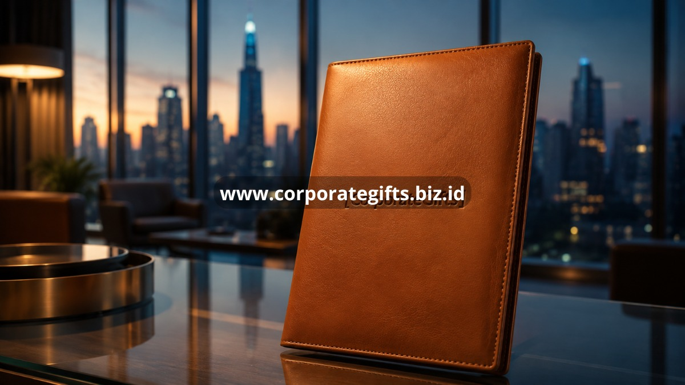

Poin Penting:
- Corporate gifting adalah alat strategis untuk memperkuat loyalitas klien dan citra merek perusahaan.
- Waktu pemberian yang tepat, seperti akhir tahun, penandatanganan kontrak, atau ulang tahun perusahaan, meningkatkan dampak hadiah.
- Jenis hadiah yang populer meliputi hampers eksekutif, merchandise custom berlogo, dan souvenir kantor fungsional.
- Kualitas dan personalisasi hadiah lebih berpengaruh daripada nilai nominalnya.
- CorporateGifts menyediakan solusi souvenir kantor siap kirim untuk kebutuhan korporat Anda.
Setiap perusahaan yang ingin tumbuh membutuhkan lebih dari sekadar produk atau layanan yang baik; mereka membutuhkan hubungan yang kuat dengan klien, mitra, dan karyawannya sendiri. Di sinilah corporate gifting berperan sebagai jembatan komunikasi nonverbal yang menunjukkan apresiasi, profesionalisme, dan komitmen jangka panjang. Sebuah hadiah korporat yang dipilih dengan tepat dapat membuka pintu negosiasi, mempercepat penutupan kontrak, dan menjaga klien lama tetap setia. Artikel ini membahas secara menyeluruh apa itu corporate gifting, mengapa strategi ini penting, kapan waktu terbaik untuk melakukannya, jenis hadiah yang paling diminati, hingga kesalahan yang perlu dihindari agar setiap pemberian hadiah benar-benar memberikan dampak positif bagi bisnis Anda.
Apa Itu Corporate Gifting dan Mengapa Penting bagi Bisnis Anda?
Corporate gifting adalah pemberian hadiah yang direncanakan secara sistematis oleh perusahaan kepada pihak eksternal maupun internal sebagai bentuk apresiasi dan strategi membangun hubungan. Praktik ini penting karena menciptakan kesan positif yang sulit dicapai hanya melalui transaksi bisnis biasa.
Berbeda dengan hadiah pribadi, corporate gifting memiliki tujuan yang lebih terstruktur: memperkuat identitas merek, menjaga hubungan jangka panjang dengan klien, serta meningkatkan rasa dihargai pada karyawan dan mitra kerja. Pemberian hadiah ini biasanya dilakukan pada momen tertentu seperti perayaan hari besar, pencapaian target bisnis, atau sebagai bagian dari program loyalitas pelanggan.
Dalam praktiknya, corporate gifting bukan sekadar formalitas. Sebuah studi internal yang umum digunakan oleh divisi pemasaran menunjukkan bahwa penerima hadiah korporat cenderung mengingat nama perusahaan pemberi lebih lama dibandingkan perusahaan yang hanya mengandalkan komunikasi pemasaran konvensional. Efek psikologis dari resiprositas, yaitu rasa ingin membalas kebaikan, membuat penerima hadiah lebih terbuka untuk melanjutkan kerja sama atau merekomendasikan perusahaan kepada jaringan mereka.
Bagi perusahaan yang bergerak di sektor B2B, corporate gifting sering menjadi pembeda ketika penawaran produk atau harga antar kompetitor relatif setara. Klien cenderung memilih mitra bisnis yang membuat mereka merasa dihargai secara personal, bukan hanya dilihat sebagai angka dalam laporan penjualan.
Bagaimana Corporate Gifting Memperkuat Citra dan Loyalitas Merek?
Corporate gifting memperkuat citra merek dengan menghadirkan pengalaman fisik yang mengingatkan penerima pada perusahaan setiap kali mereka menggunakan barang tersebut. Efek ini jauh lebih tahan lama dibandingkan iklan digital yang mudah terlupakan.
Souvenir kantor berkualitas dengan logo yang ditempatkan secara elegan berfungsi sebagai media promosi pasif yang terus bekerja tanpa biaya tambahan. Setiap kali klien menggunakan tumbler, notebook, atau tas kerja bermerek perusahaan Anda, mereka secara tidak langsung memperkenalkan brand Anda kepada lingkungan sekitarnya, baik di kantor, rumah, maupun ruang publik.
Selain memperkuat brand awareness, corporate gifting juga berperan besar dalam retensi klien. Perusahaan yang secara konsisten memberikan apresiasi melalui hadiah korporat cenderung memiliki tingkat churn atau kehilangan klien yang lebih rendah dibandingkan yang tidak melakukannya sama sekali. Klien yang merasa dihargai lebih jarang berpindah ke kompetitor meskipun ditawarkan harga yang lebih murah, karena hubungan emosional yang terbangun memiliki nilai yang sulit digantikan oleh potongan harga semata.
Loyalitas karyawan juga terpengaruh oleh praktik ini. Ketika perusahaan memberikan hadiah apresiasi kepada tim internal secara rutin, muncul rasa memiliki dan keterikatan emosional terhadap perusahaan yang berdampak pada produktivitas serta tingkat retensi karyawan.
Kapan Waktu Terbaik Memberikan Corporate Gift kepada Klien dan Karyawan?
Waktu terbaik memberikan corporate gift adalah pada momen bermakna seperti akhir tahun, penandatanganan kontrak baru, ulang tahun perusahaan, dan pencapaian target bersama. Ketepatan waktu menentukan seberapa besar dampak emosional yang diterima penerima hadiah.
Momen akhir tahun atau pergantian tahun menjadi waktu paling umum digunakan perusahaan untuk mengirimkan hampers atau parcel korporat kepada klien dan mitra. Selain menjadi tradisi, momen ini juga menjadi kesempatan untuk mengucapkan terima kasih atas kerja sama sepanjang tahun sekaligus membuka jalan untuk kolaborasi di tahun berikutnya.
Selain momen tahunan, ada beberapa titik kontak penting lain yang layak dipertimbangkan:
- Saat penandatanganan kontrak atau kerja sama baru, sebagai simbol awal hubungan bisnis yang positif.
- Saat perusahaan merayakan ulang tahun atau pencapaian milestone tertentu.
- Saat klien atau mitra mencapai pencapaian penting dalam bisnis mereka sendiri.
- Saat onboarding karyawan baru, sebagai bagian dari pengalaman pertama yang berkesan.
- Saat acara internal seperti seminar, pelatihan, atau gathering perusahaan.
Memilih momen yang tepat membuat hadiah terasa lebih personal dan tidak sekadar formalitas rutin. Perusahaan yang jeli membaca momentum bisnis kliennya akan lebih mudah membangun kedekatan yang berujung pada loyalitas jangka panjang.

Apa Saja Jenis Corporate Gift yang Paling Diminati Perusahaan?
Jenis corporate gift yang paling diminati perusahaan meliputi hampers eksekutif, merchandise custom berlogo, dan souvenir kantor fungsional seperti tumbler, notebook, serta tas kerja. Ketiganya dipilih karena kombinasi antara kegunaan sehari-hari dan nilai presentasi yang profesional.
Hampers eksekutif biasanya berisi kombinasi produk premium seperti kudapan berkualitas, minuman pilihan, dan aksesori kerja yang dikemas dalam kotak elegan. Jenis hadiah ini cocok untuk momen formal seperti akhir tahun atau perayaan pencapaian besar perusahaan.
Merchandise custom dengan logo perusahaan, seperti pulpen premium, power bank, atau jam meja, memberikan nilai tambah berupa eksposur merek yang berkelanjutan. Barang-barang ini digunakan berulang kali sehingga logo perusahaan terus terlihat dalam jangka waktu lama.
Sementara itu, souvenir kantor fungsional seperti tumbler stainless, tas laptop, atau organizer meja menjadi favorit karena praktis digunakan dalam aktivitas kerja sehari-hari. Kombinasi desain minimalis dan kualitas bahan yang baik membuat jenis hadiah ini terasa mewah tanpa berlebihan.
Pemilihan jenis hadiah sebaiknya disesuaikan dengan profil penerima, budaya perusahaan, dan tujuan pemberian hadiah itu sendiri agar pesan yang ingin disampaikan tetap tepat sasaran.
Bagaimana Memilih Corporate Gift yang Berkesan dan Profesional?
Corporate gift yang berkesan dan profesional dipilih berdasarkan kualitas bahan, relevansi dengan identitas merek, dan tingkat personalisasi yang diberikan. Hadiah yang terlihat murahan justru dapat merusak citra perusahaan alih-alih memperkuatnya.
Kualitas harus menjadi prioritas utama sebelum harga. Barang yang tahan lama dan nyaman digunakan akan terus mengingatkan penerima pada perusahaan Anda dalam jangka panjang, sementara barang berkualitas rendah justru cepat dibuang dan meninggalkan kesan negatif.
Relevansi dengan identitas merek juga penting diperhatikan. Warna, desain kemasan, dan jenis barang sebaiknya mencerminkan nilai dan karakter perusahaan, baik itu formal, modern, ramah lingkungan, atau elegan.
Personalisasi menjadi elemen pembeda yang membuat hadiah terasa lebih istimewa. Penambahan nama penerima, ucapan khusus, atau logo yang ditempatkan secara presisi menunjukkan bahwa hadiah tersebut disiapkan dengan perhatian, bukan sekadar produk massal yang dibagikan seragam.
Apa Kesalahan Umum dalam Corporate Gifting yang Wajib Dihindari?
Kesalahan umum dalam corporate gifting meliputi pemilihan hadiah yang terlalu generik, pengiriman yang terlambat dari momen penting, dan kurangnya personalisasi pada barang yang diberikan. Kesalahan ini dapat mengurangi dampak positif yang seharusnya dihasilkan.
Hadiah generik tanpa sentuhan personal sering kali dianggap sebagai formalitas belaka dan mudah dilupakan. Penerima cenderung lebih menghargai hadiah yang terasa dipikirkan secara khusus untuk mereka, bukan barang seragam yang dibagikan tanpa pertimbangan.
Keterlambatan pengiriman, terutama untuk momen musiman seperti akhir tahun, dapat mengurangi makna hadiah secara signifikan. Perencanaan yang matang dan pemesanan lebih awal sangat penting untuk memastikan hadiah sampai tepat waktu.
Kesalahan lain yang sering terjadi adalah mengabaikan kualitas kemasan. Kemasan yang asal-asalan dapat menurunkan persepsi nilai hadiah, bahkan jika isinya berkualitas tinggi. Kemasan yang rapi dan profesional membantu menciptakan kesan pertama yang positif sejak hadiah diterima.
Terakhir, banyak perusahaan tidak mempertimbangkan kebijakan penerimaan hadiah dari pihak klien, terutama pada institusi tertentu yang memiliki aturan ketat terkait gratifikasi. Memahami batasan ini penting agar pemberian hadiah tidak menimbulkan masalah etika atau hukum bagi kedua belah pihak.
Bagaimana Memulai Program Corporate Gifting untuk Perusahaan Anda?
Memulai program corporate gifting dapat dilakukan dengan menentukan anggaran, memilih jenis hadiah yang relevan, dan menetapkan jadwal pemberian yang konsisten sepanjang tahun. Konsistensi lebih penting daripada frekuensi pemberian yang berlebihan.
Langkah pertama adalah menetapkan anggaran tahunan khusus untuk corporate gifting, terpisah dari anggaran pemasaran umum. Hal ini membantu memastikan program berjalan berkelanjutan tanpa mengganggu alokasi dana lainnya.
Setelah anggaran ditetapkan, perusahaan perlu memetakan daftar penerima prioritas, mulai dari klien utama, mitra strategis, hingga karyawan berprestasi. Segmentasi ini membantu menentukan jenis dan nilai hadiah yang sesuai untuk setiap kelompok penerima.
Untuk mempermudah proses produksi dan pengiriman souvenir kantor dalam jumlah besar, CorporateGifts hadir sebagai solusi terpadu yang menyediakan berbagai pilihan hampers eksekutif, merchandise custom, dan souvenir fungsional siap kirim ke seluruh Indonesia. Anda cukup menentukan kebutuhan dan target penerima, dan tim kami akan membantu menyiapkan hadiah korporat yang berkesan sesuai identitas merek perusahaan Anda.
Corporate gifting adalah investasi jangka panjang dalam membangun relasi bisnis yang kuat, bukan sekadar pengeluaran musiman. Pemilihan waktu yang tepat, jenis hadiah yang relevan, serta personalisasi yang konsisten akan menentukan seberapa besar dampak positif yang dirasakan penerima maupun perusahaan pemberi.
Jika Anda ingin memulai atau meningkatkan program corporate gifting perusahaan dengan pilihan hampers eksekutif, merchandise custom, dan souvenir kantor berkualitas, tim CorporateGifts siap membantu mewujudkan hadiah korporat yang meninggalkan kesan mendalam bagi klien dan karyawan Anda. Hubungi CorporateGifts hari ini untuk konsultasi kebutuhan hadiah korporat perusahaan Anda.
FAQ
1. Apa itu corporate gifting?
Corporate gifting adalah praktik pemberian hadiah resmi dari perusahaan kepada klien, mitra, atau karyawan sebagai bentuk apresiasi dan strategi membangun hubungan bisnis jangka panjang.
2. Mengapa corporate gifting penting untuk bisnis?
Corporate gifting penting karena memperkuat loyalitas klien, meningkatkan brand awareness secara pasif, dan menciptakan kesan profesional yang membedakan perusahaan dari kompetitor.
3. Kapan waktu terbaik memberikan corporate gift?
Waktu terbaik adalah pada momen bermakna seperti akhir tahun, penandatanganan kontrak baru, ulang tahun perusahaan, atau pencapaian target bersama dengan klien.
4. Apa jenis corporate gift yang paling banyak dipilih perusahaan?
Jenis yang paling banyak dipilih adalah hampers eksekutif, merchandise custom berlogo, dan souvenir kantor fungsional seperti tumbler, notebook, dan tas kerja.
5. Berapa anggaran ideal untuk program corporate gifting?
Anggaran ideal bervariasi tergantung skala perusahaan dan jumlah penerima, sehingga sebaiknya ditetapkan sebagai pos anggaran tahunan khusus yang disesuaikan dengan target dan prioritas penerima hadiah.
Butuh rekomendasi cepat untuk corporate gift?
Chat tim Pusat Souvenir & Merchandise Kantor untuk kurasi pilihan sesuai budget & kebutuhan brand Anda.